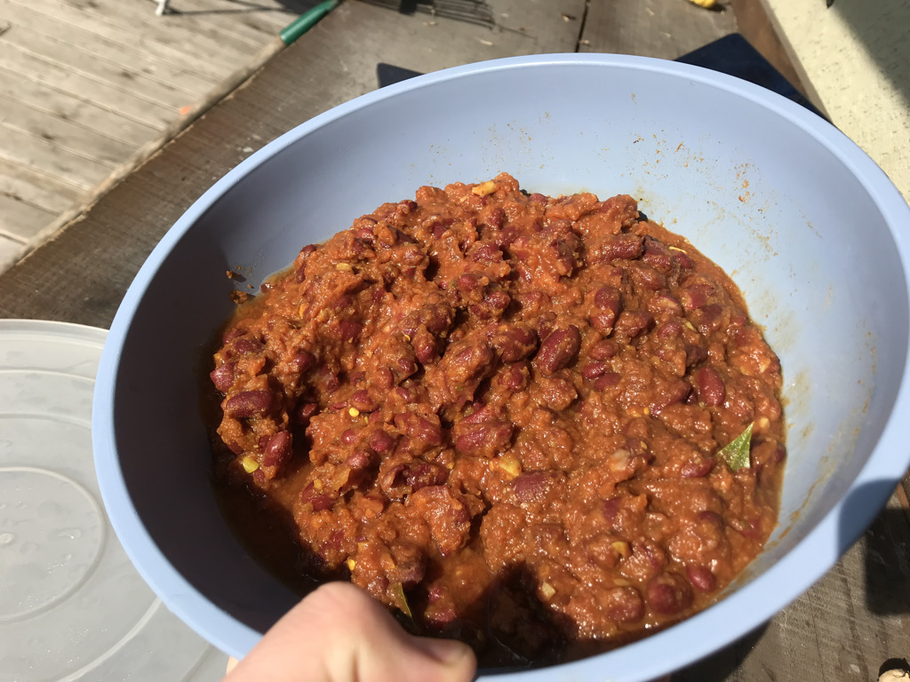
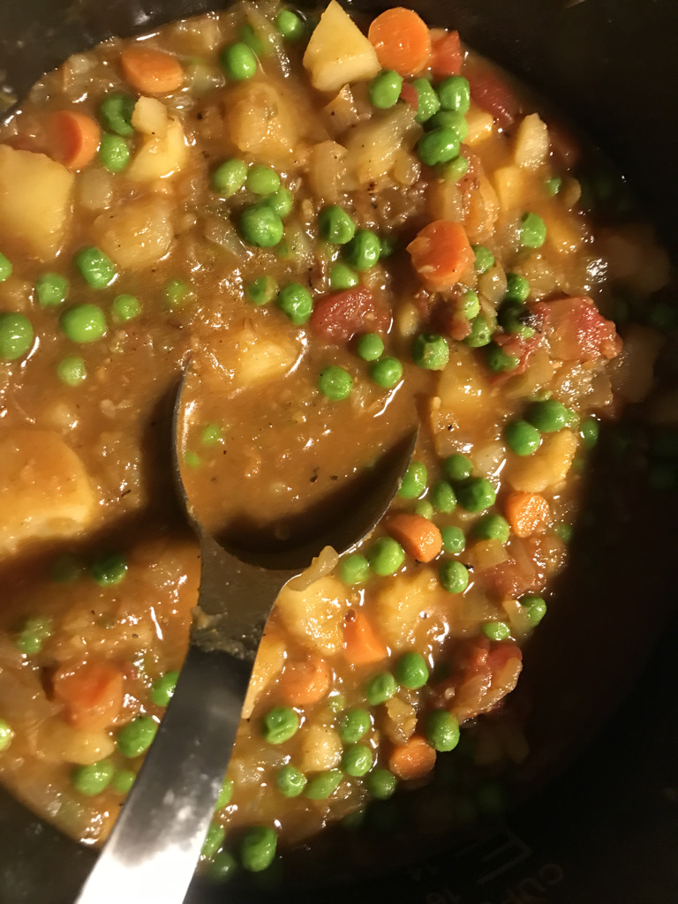
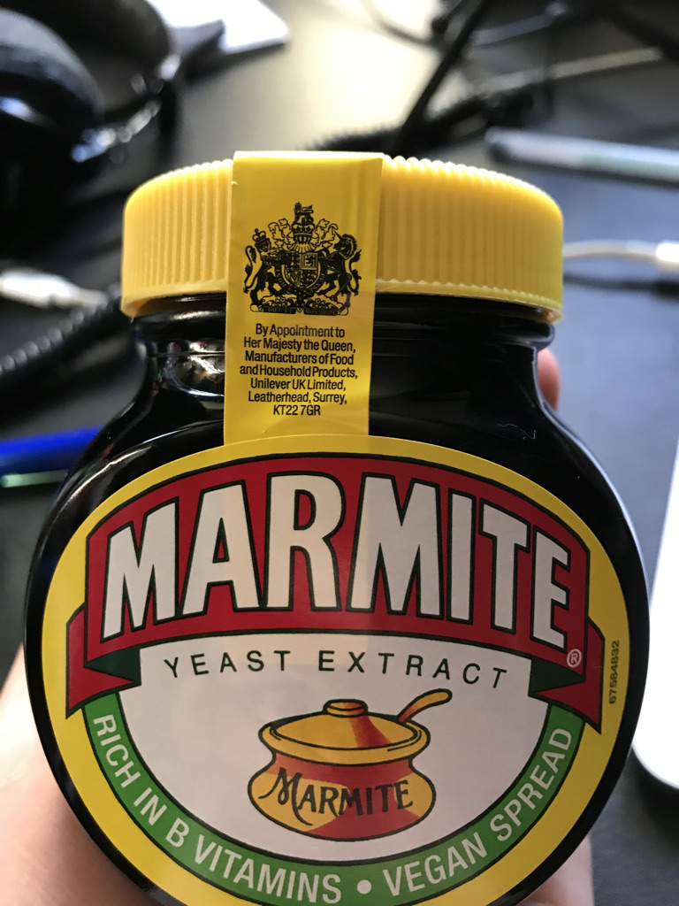
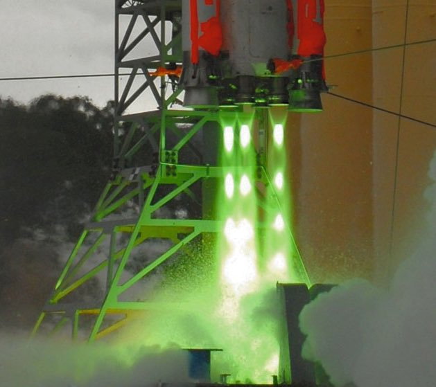

Disclaimer
Well. I want to establish up front that I had no part in the kidnapping of the Lindenbergh Baby.
Curry
This is as close as I'm getting to a cooking blog. I don't even know at this point.
Looky-here. I've got some curry pictures. I dunno.
Some rajma:

Some potato pea curry:

Some marmite that mentions the queen on the safety label:

I'm out of things to say, to be completely honest.
I've collected some interesting videos and pictures here.
Liquid propane:
Sprint Missile:
Project Orion test with chemical explosives:
Triethylaluminum-triethylborane ignition fluid making a scale model of SLS have green exhaust during a test.
